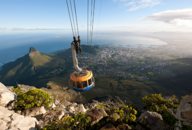

Hiking
Hiking is one of my favorite outdoor activities. South Africa has many beautiful landscapes and mountains that make hiking exciting and rewarding. My favorite place to hike is Table Mountain National Park in Cape Town. From the top of the mountain, the sea and sky seem to blend together, creating a breathtaking view.
